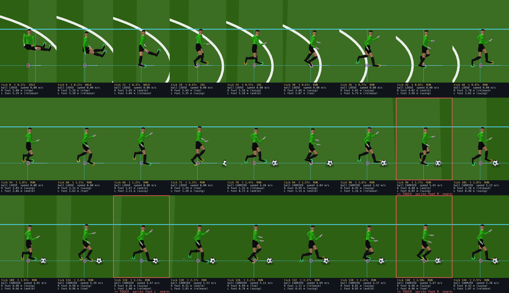
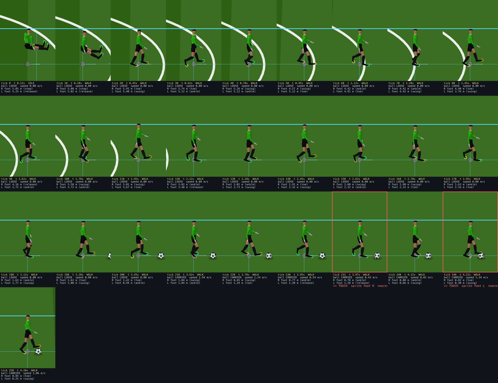
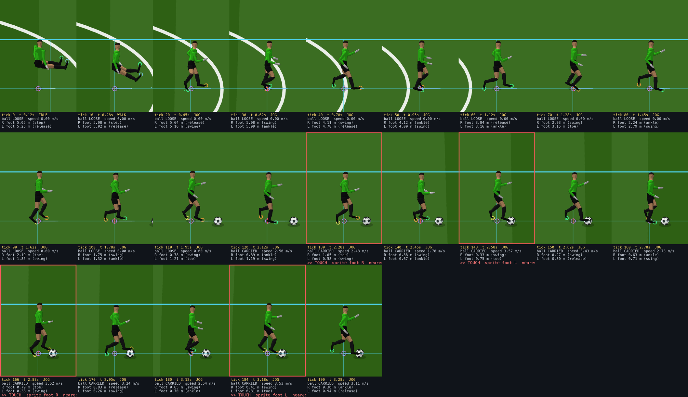
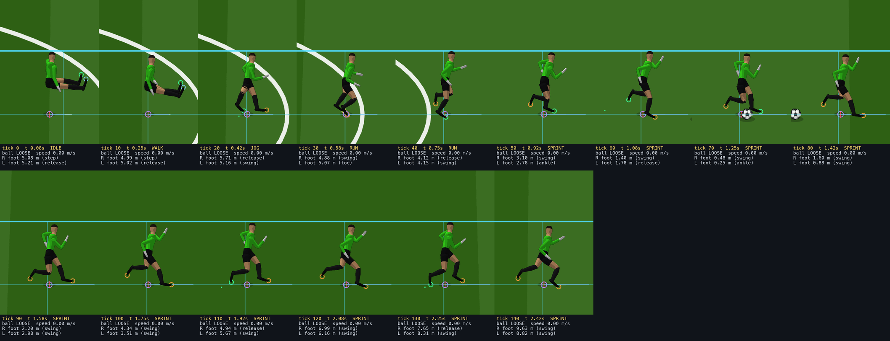
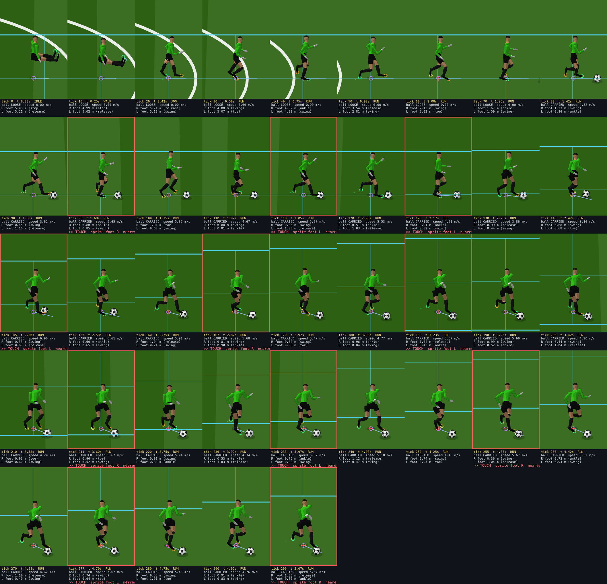

An audit of the ball behaviour already present in the outfield locomotion harness. Nothing was changed. No dribbling was implemented.
CONTROLLED DRIBBLING V1 in the player law, which fires a solved impulse on a timer whose
period is a function of player speed. The skinned feet are never consulted. What looks like alternating feet is the touch clock and the stride
clock running at different rates, so the nearer foot drifts from touch to touch.ptStep, the simulation law.
The entire outfield presentation contains exactly one ball write: a one-off line at boot that parks the ball in the corner as a fixture.
There is no per-tick presentation write anywhere.CONTROLLED DRIBBLING V1 — mirror of world.py carry_touch: possession states
(SECURE, EXPOSED, ESCAPING), a corridor that slews at 7 rad/s, a solved impulse, speed curves for touch period and standoff, corrective
early touches on a turn, and settle behaviour at rest. It is a port of the engine's own carry law.The touch fires when a countdown reaches zero: T = clamp(0.18 + 0.036 v, 0.18, 0.48) seconds. The measured spacing matches that
curve, and has no relationship to the stride.
| Gear | Speed m/s | Touches | Measured spacing s | Predicted T(v) s | Step period s | Touch / step | Nearest foot to ball m | mean | Sprite foot = nearest 3D foot |
|---|---|---|---|---|---|---|---|---|---|
| walk | 1.5 | 5 | 0.250 | 0.234 | 0.467 | 0.54 | 0.18 – 0.78 | 0.42 | 3/5 RLRLR vs RLLRR |
| jog | 3.0 | 10 | 0.300 | 0.288 | 0.312 | 0.96 | 0.33 – 0.64 | 0.50 | 0/10 RLRLRLRLRL vs LRLRLRLRLR |
| run | 5.0 | 8 | 0.367 | 0.360 | 0.228 | 1.61 | 0.36 – 0.80 | 0.58 | 4/8 RLRLRLRL vs RRRLLRRR |
| sprint | 8.2 | 0 | never gains control — relative speed exceeds 5.5 m/s, the law fires LOOSE TOUCH and the ball squirts away | ||||||
A boot can reach roughly 0.25 m from the ankle and the ball radius is 0.11 m, so a genuine contact needs the ankle within about 0.35 m. The nearest foot is typically 0.42 to 0.58 m away at the moment the ball is struck, and at run it is never closer than 0.36 m. The last column compares the foot the sprite pose library names against the foot actually nearest the ball: agreement is at chance.
Run gear, 5.0 m/s, stationary ball 6 m ahead. Foot distances are ankle to ball centre in the pitch plane; foot speed is the ankle's own world speed. Highlighted rows are the events.
| Tick | t s | Event | Player–ball m | R dist | R mode | R speed m/s | L dist | L mode | L speed m/s | Ball v before | after | Sprite foot |
|---|---|---|---|---|---|---|---|---|---|---|---|---|
| 76 | 1.433 | 0.98 | 1.31 | release | 6.5 | 0.66 | swing | 8.8 | 0.00 | 0.00 | ||
| 77 | 1.450 | CONTROL GAINED | 0.97 | 1.31 | release | 4.5 | 0.65 | swing | 5.5 | 0.00 | 4.53 | |
| 80 | 1.500 | 0.94 | 1.23 | swing | 8.1 | 0.86 | ankle | 0.0 | 4.39 | 4.32 | ||
| 84 | 1.567 | 0.89 | 0.99 | swing | 9.3 | 1.14 | ankle | 0.0 | 4.11 | 4.04 | ||
| 88 | 1.633 | 0.82 | 0.61 | swing | 9.8 | 1.20 | release | 0.0 | 3.83 | 3.76 | ||
| 92 | 1.700 | 0.73 | 0.54 | ankle | 2.6 | 1.11 | release | 7.2 | 3.55 | 3.48 | ||
| 96 | 1.767 | TOUCH | 0.66 | 0.80 | ankle | 0.0 | 0.85 | swing | 7.9 | 3.27 | 5.65 | R |
| 100 | 1.833 | 0.70 | 1.04 | toe | 4.7 | 0.63 | swing | 10.4 | 5.44 | 5.37 | ||
| 104 | 1.900 | 0.72 | 1.10 | release | 4.8 | 0.40 | swing | 7.5 | 5.16 | 5.09 | ||
| 108 | 1.967 | 0.72 | 0.98 | swing | 7.9 | 0.66 | ankle | 0.0 | 4.88 | 4.81 | ||
| 112 | 2.033 | 0.70 | 0.76 | swing | 8.9 | 0.93 | toe | 4.8 | 4.60 | 4.53 | ||
| 116 | 2.100 | 0.66 | 0.42 | swing | 9.3 | 1.00 | release | 0.0 | 4.32 | 4.25 | ||
| 118 | 2.133 | TOUCH | 0.66 | 0.36 | swing | 6.1 | 1.00 | release | 4.2 | 4.18 | 5.67 | L |
| 120 | 2.167 | 0.68 | 0.51 | ankle | 0.0 | 1.03 | release | 6.6 | 5.60 | 5.53 | ||
| 124 | 2.233 | 0.71 | 0.86 | ankle | 0.0 | 0.87 | swing | 8.2 | 5.32 | 5.25 | ||
| 128 | 2.300 | 0.72 | 1.01 | toe | 6.1 | 0.59 | swing | 11.2 | 5.04 | 4.97 | ||
| 132 | 2.367 | 0.71 | 1.11 | release | 4.1 | 0.41 | swing | 5.6 | 4.76 | 4.69 | ||
| 136 | 2.433 | 0.68 | 0.92 | swing | 7.8 | 0.71 | ankle | 0.0 | 4.48 | 4.41 | ||
| 140 | 2.500 | TOUCH | 0.66 | 0.68 | swing | 9.2 | 0.96 | toe | 2.2 | 4.20 | 5.67 | R |
| 144 | 2.567 | 0.70 | 0.42 | swing | 9.0 | 1.07 | release | 6.2 | 5.45 | 5.38 |
Reading it. Control is gained at tick 77 by a player-centre radius test at 0.97 m, with the right foot 1.31 m away and the left 0.65 m away and airborne. Neither foot is near the ball. Every touch after that lands on the 22-tick clock, adds the same solved impulse and leaves the ball at the same 5.67 m/s, while the feet are wherever the stride happens to have put them.
The clearest single proof is the first touch, at tick 96. The nearest foot is the right, 0.80 m from the ball, planted on the ground and moving at 0.0 m/s. A stationary foot nearly a metre away cannot strike a ball, yet the ball leaves at 5.65 m/s in that tick. At the next two touches the nearest foot is airborne mid-swing at 6.1 and 9.2 m/s, still 0.36 and 0.68 m short. The feet and the ball are simply not connected.





Yes, and legitimately: the carry branch of the player law steers the player through the ball toward a point 2 m along the desired corridor. With an identical key script, the path with and without the ball is bit-identical in a straight line and diverges by up to 0.58 m once a turn starts. Speed is untouched. This is authoritative simulation, not presentation.
Worth keeping. The ball staying authoritative and physical; the free roll between touches with real friction; possession as a state machine with an escape envelope rather than a boolean; touch period and standoff as functions of speed; corrective touches on a turn; the speed ceiling that makes a sprint carry genuinely hard; and the carry steering that bends the player toward his own ball.
Missing before this is real dribbling. The touch is not a contact: no foot is tested against the ball, so no foot can miss, and the impulse is solved rather than transferred. Stride phase does not choose the touching foot, so the right foot cannot be the one that reaches. Sprint has no carry at all. And the foot named by the pose library is not the foot the 3D rig has anywhere near the ball, so the locomotion and the ball are two systems that currently only share a clock.